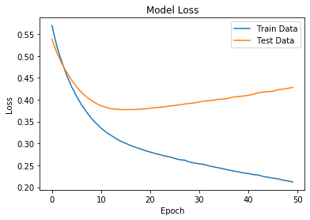
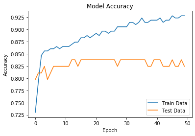

Neural Network Machine Learning Algorithm

Introduction
Artificial neural networks are one of the main tools used in machine learning. As the “neural” part of their name suggests, they are brain-inspired systems which are intended to replicate the way that we humans learn. Neural networks consist of input and output layers, as well as (in most cases) a hidden layer consisting of units that transform the input into something that the output layer can use. They are excellent tools for finding patterns which are far too complex or numerous for a human programmer to extract and teach the machine to recognize.
Neural networks are multi-layer networks of neurons (the blue and magenta nodes in the chart below) that we use to classify things, make predictions, etc.
Below is the diagram of a simple neural network with five inputs, 5 outputs, and two hidden layers of neurons.
Implementation on the Heart Disease dataset
A supervised Sequential neural network model was created to compare against the other classification models. Keras open software was leveraged to create, train, and compile the model for the comparison. To prepare the data for the model, the categorical output was one-hot encoded, while the inputs were scaled using the Scikit-Learn MinMax Scaler. For the model, a Sequential neural network was developed using Dense 2D layers and a Softmax activation layer. Optimization was done by maximizing the accuracy of the model using the test data by changing the number of hidden layers, nodes in each layer, the activation function of each layer, the number of epochs, and the optimizer input for the compiler function. It should also be noted for the compiler function, the categorical cross-entropy loss function input was used.
Like with the other models, the same split data was used to train and test the model. The highest accuracy achieved with the trained model against the test data was 0.824. This accuracy was acquired with several different sets of parameters. Accuracy and loss over each epoch were also graphed to help determine if a model with a certain set of parameters was under or overfitted. Overall, with the given data, several sets of parameters generated very similar neural network models. The final model saved and used for the comparison used only 1 hidden layer with the Relu activation function, 50 nodes in said layer, along with 50 epoch cycles and the optimizer function Adam.
 